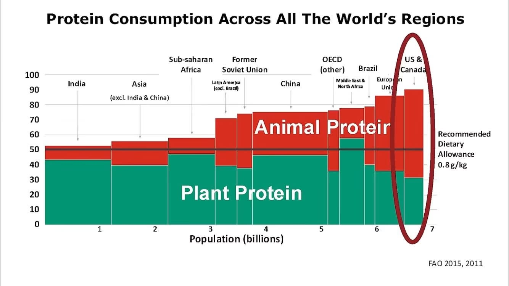

(no text — see the shared post below)
The USA leads the world in consumption of both total protein and high-quality (animal) protein.
The y-axis is g/kg of protein consumed per day, where the midpoint is the RDA of 0.8g/kg.
It’s just laughable that influencers keep telling us that we don’t get enough protein.
The reference for this chart is the 2015 and 2011 reports from the Food and Agriculture Organization (FAO) of the United Nations.
Here is a quick sanity-check of the USA protein number on the chart:
The average American consumes 3540 calories per day.
This calorie number also comes from the FAO data of the United Nations.
(Yes, that calorie number is roughly correct. I encourage you to fact check it. In a nutshell, this is why we have an obesity crisis in the USA:
↪ Obesity crisis and seed oils (image only),
↪ Louis attributes the obesity crisis to rising daily calorie intake, not conspiracies.)
About 14% of those calories are protein. That is 496 calories or 124g of protein per day, since 4 calories is 1g. The average American weighs 84kg (males 90kg & females 78kg). So the average daily protein intake in the USA is around 124g/84kg = 1.48g/kg.
You can argue that the protein intake in the USA is probably even higher than this 1.48g/kg number in reality, because 74% of US adults are overweight or obese. This obesity rate is much higher than other regions of the world. A lot of this extra fat should really be subtracted from the weight when calculating protein requirements. That’s how dieticians actually do it. They calculate protein requirements based on lean mass, not total bodyweight. So instead of an average weight of 84kg in the calculation, we should probably be using something smaller. Because we’re so fat, our protein intake in the USA should really be thought of as even higher than 1.48g/kg.
I constantly see influencers quoting ridiculously low numbers like 0.9g/kg for USA protein consumption, saying we consume only a tiny bit above the RDA. This is completely wrong, as this simple calculation shows. We consume much more than that. The fact that our overall calorie consumption is so ridiculously high in the USA (3540 calories) forces our protein consumption to also be very high. They go together.
#proteinHD #proteinsummaryHD
